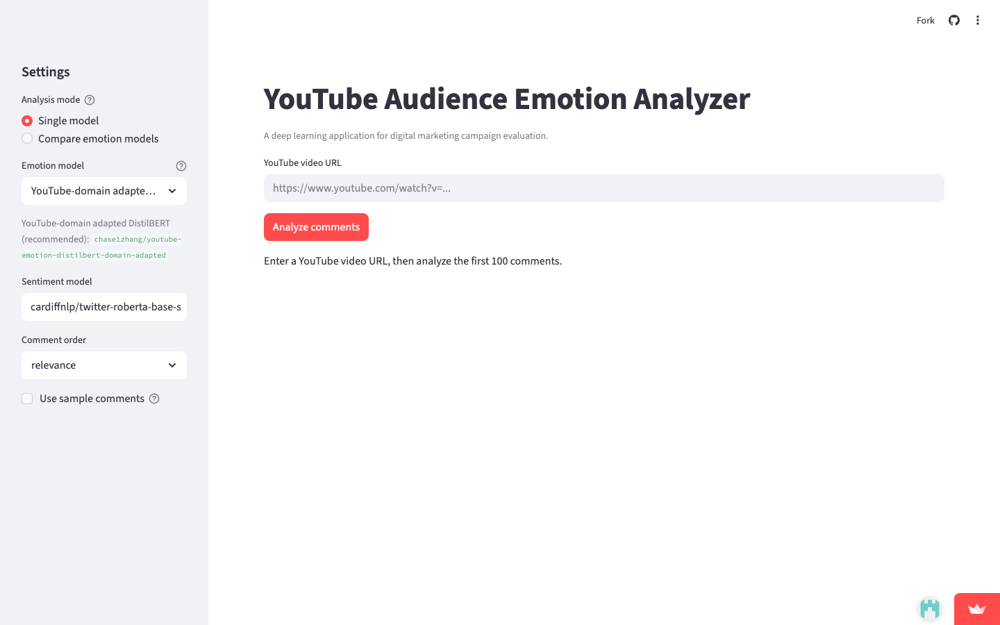
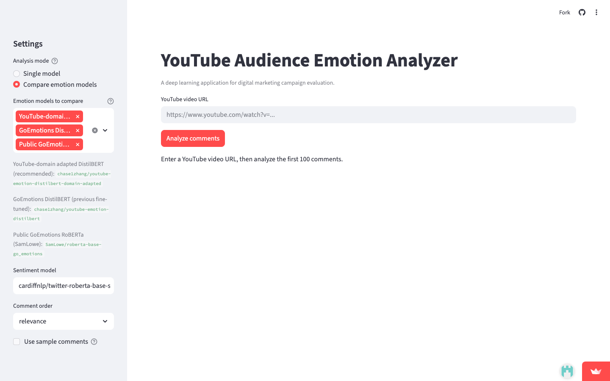

人工阅读评论耗时长、判断主观、无法规模化处理
营销团队难以从评论中快速识别正面/负面反馈模式
没有自动化工具将评论转化为可执行的营销建议
从 YouTube 链接输入到营销建议输出，全自动 5 步处理
愤怒、厌恶、恐惧、喜悦、中性、悲伤、惊讶 — 精细化情绪诊断
正面、中性、负面 — 简洁的业务级情感信号
5 个模型可选，3 模型并行对比模式，一键切换
基于情绪分布自动生成可执行的营销优化建议
基于 3 个 YouTube 视频 × 50 条人工审核评论的独立评估

七情绪分类
可选模型数
Streamlit Cloud 部署

并行对比模型数
每模型分析评论数
一键导出预测结果
Reddit 风格训练数据
与 YouTube 评论存在领域差异
平衡数据 + class-weighted loss
2,962 条 YouTube 评论领域适配
情绪洞察
驱动营销决策
YouTube 领域数据 + 平衡策略让模型准确率排名第一
七情绪精细诊断 + 三分类情感稳定信号，共同支持决策
从数据采集到 Streamlit Cloud 部署，完整业务闭环